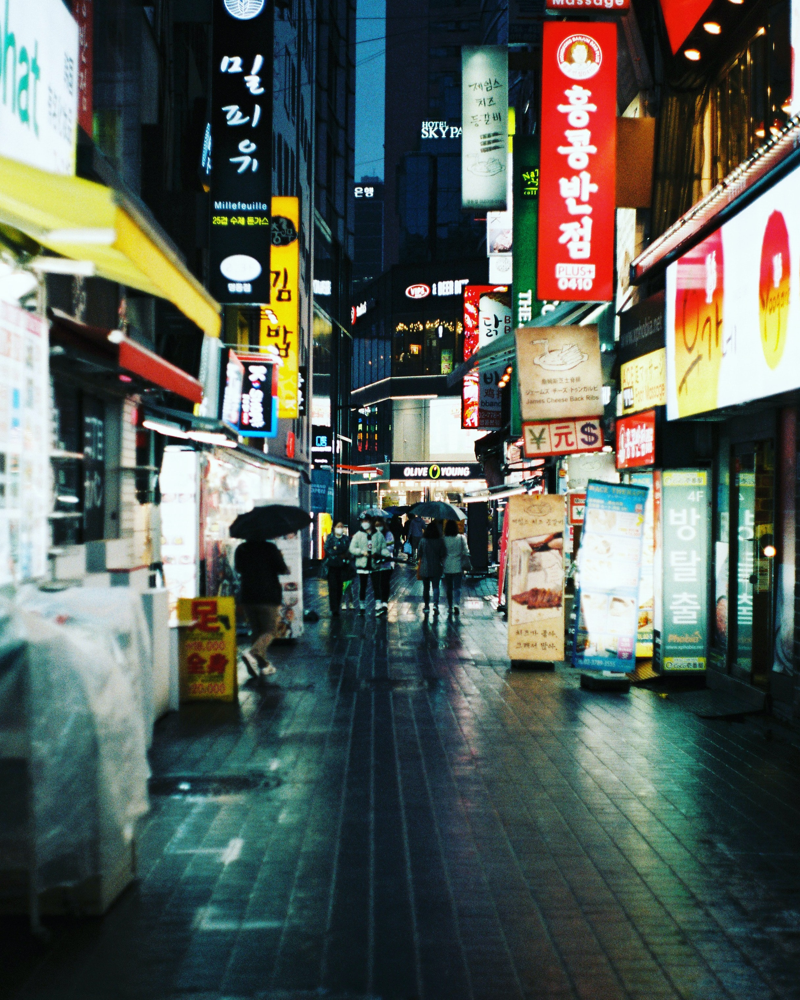

Istana Gyeongbokgung
Terletak di sebelah utara Kota Seoul, Istana Gyeongbokgung merupakan istana terbesar yang dibangun oleh Dinasti Joseon. Istana ini merupakan tempat tinggal resmi dan utama keluarga kerajaan selama Dinasti Joseon.
Terletak di sebelah utara Kota Seoul, Istana Gyeongbokgung merupakan istana terbesar yang dibangun oleh Dinasti Joseon. Istana ini merupakan tempat tinggal resmi dan utama keluarga kerajaan selama Dinasti Joseon.
Di dalam area istana, pengunjung dapat melihat banyak bangunan yang telah dipugar. Pengunjung akan menikmati variasi bangunan dengan masing-masing fungsinya. Anda juga bisa menyaksikan Upacara Pergantian Pengawal Kerajaan di Gerbang Gwanghwamun. Pastikan untuk mengatur waktu kunjungan Anda untuk dapat menyaksikan pertunjukan budaya.
Istana Gyeongbokgung juga sesekali menawarkan penerimaan malam khusus, jadi jangan lewatkan kesempatan untuk menikmati suasana malam di halaman istana jika jadwal Anda memungkinkan.
Namsan Seoul Tower
Landmark paling terkenal di Seoul tidak lain adalah Namsan Seoul Tower. Ikon kota Seoul ini terletak di puncak Gunung Namsan di pusat kota. Menara ini menarik pengunjung sepanjang tahun.
Tempat ini paling terkenal dengan pemandangan nightscape kota yang penuh gemerlap. Bagi penggemar hallyu, menara ini merupakan objek wisata yang wajib dikunjungi, karena telah ditampilkan dalam drama seperti "My Love From the Star (2013)" dan "Legend of the Blue Sea (2016)."
Menara ini tidak hanya menampilkan dek observasi, tetapi juga berbagai kafe dan restoran di antara fasilitas lainnya. Menara Namsan Seoul adalah tempat yang tepat untuk menghabiskan malam yang menyenangkan bersama teman atau orang yang dicintai, sambil menikmati pemandangan malam. Untuk naik ke atas menara, pengunjung diwajibkan membayar tiket sebesar 10.000 Won (Rp 130.000) untuk dewasa dan 8.000 Won (Rp 105.000) untuk anak-anak.
Jeju Island
Jeju Island juga sebagai salah satu destinasi wisata yang hits dan terkenal karena dipergunakan sebagai lokasi syuting dari beberapa K-Drama. Pulau menakjubkan yang hanya berjarak 85 km dari pantai ini adalah salah satu tempat paling indah di Korea Selatan. Jeju Island telah terpilih sebagai salah satu dari Tujuh Keajaiban Alam Baru.
Pantai pasir putih yang nyata dikelilingi oleh hutan pinus, kawah gunung berapi dan gua lava, taman botani yang indah dan budaya yang kaya adalah beberapa dari titik-titik tinggi dari surga alami ini. Lokasinya berada di Semenanjung Korea bagian Selatan, sebelah Barat Daya Provinsi Jeolla Selatan.
 To go places and do things that have never been done before – that’s what living is all about.
To go places and do things that have never been done before – that’s what living is all about.
Pasar Malam Myeongdong
Jika Anda baru pertama kali ke Korea Selatan, pasar malam Myeongdong wajib dikunjungi. Berlokasi dengan dua departement store besar seperti Lotte dan Shinsegae, Seoul, tempat ini dikenal sebagai surganya brand make up dan kuliner jajanan pasar khas Korea.
Sebagai distrik mode dan perbelanjaan, banyak pemuda Korea dan wisatawan internasional mencari penawaran hebat dan tren terbaru. Myeong-dong membentang sekitar 1 kilometer dari Stasiun Myeong-dong (Seoul Subway Line 4) ke Eulji-ro Avenue dan Lotte Department Store.
Bahkan jika berbelanja bukan hal yang Anda sukai, Anda masih dapat menikmati Myeong-dong dengan mencoba makanan jalanan dan banyak restoran terkenal di daerah ini Disini Anda akan dimanjakan dengan kuliner kaki lima khas Korea Selatan seperti tteokbokki, gyeranbbang, dan masih banyak lagi. Selain makeup dan kuliner, di sepanjang jalan area Myeongdong pun berjejer rapi para pedagang yang menjual pakaian dan aksesoris untuk oleh-oleh.